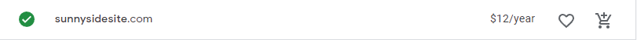

Domain Name
This domain costs $12 a year!
Link to Domain: sunnysidesite.com
Description
The purpose of this webpage is to lay out the planning behind the sunny side site webpage. This page includes the domain name for my weather site, a navigation menu bar that takes you to different webpages that explain a bit more of the target audience, what colors are being used on the webpage and what fonts are being used on the webpage as well.